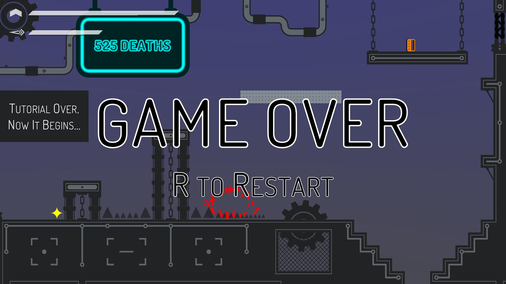

Overview
For the past several months, I have been working on Oneironaut, a game currently available on Steam for free. With some help from my partner Albert Wang, we have developed our game through the Unity game engine. Oneironaut is a 2D platformer, focused on diffuclty and gameplay mechanics. Our game has a loose storyline where the player navigates dream levels in hopes to escape their dream state. They must surpass three dream worlds before encountering the final boss of the game. The game is easy to pick up and understand, with a series of tutorial rooms explaining the core mechanics. Our intention was to create a game that was fun but also extremely challenging to cater to the hardcore audience, where the levels are strucutered to favor skill rather than luck. Each of the three worlds presents several unique mecahnics to the player and the boss uses a combination of every one of those mechanics learned previously.

Challenges
When starting the game, one the of the biggest challenges was learning how to use Unity and the physics engine. Attaining adequate knowledge of Unity to accomplish what I wanted took several weeks, and I still have much to learn about the engine. Other than acquiring the skills necessary for making a game, we also struggled with settling on what our final game should look like. Our initial hopes for the game were far too ambitious, requiring us to lower expectations and complete a small polished game. Eventually we arrived at what Oneironaut is today, but not easily. Regarding the programming aspect of creating the game, I believe that the most challenging code that I wrote had to do with the save system. The game supports an unlimited number of saves, each saving the world the player is on, the position of the player, and the state of every single save-able object in the world. I spent several hours making the code for it as compact and efficient as possible, and ultimately, I am quite proud of the system. We also had difficulty creating art for our game, as neither me nor Albert had sufficient art skills. I eventually had to learn the basics of creating art, but deciding an art style was also challenging as we had overhauled it twice during developement.
Experience Gained
Creating Oneironaut gave us significant insight into developing indie games, and we still have much to learn. I now feel confident in my skills using Unity, and I believe that I have learned a good portion of what the engine has to offer. My code writing skills in C# have defintely improved over the past several months as I always tried to write the most efficient code possible. I have expanded my knowledge of creating vector art in Adobe Illustrator, as doing so was necessary for our game. Finally, we now know the difficulty of publishing games to Steam, and the amount of personal information and time required to become verified. With all this experience from creating Oneironaut, there are several things that I would change if I were to go through the game development process again. Mainly, I would plan better so I would not need to overhaul the game halfway through development. I have gained astronomical amounts of information about creating games that I did not know previously, and I believe that I could do it again in the future if I wanted to. Nevertheless, I still have much to learn in the world of game development.